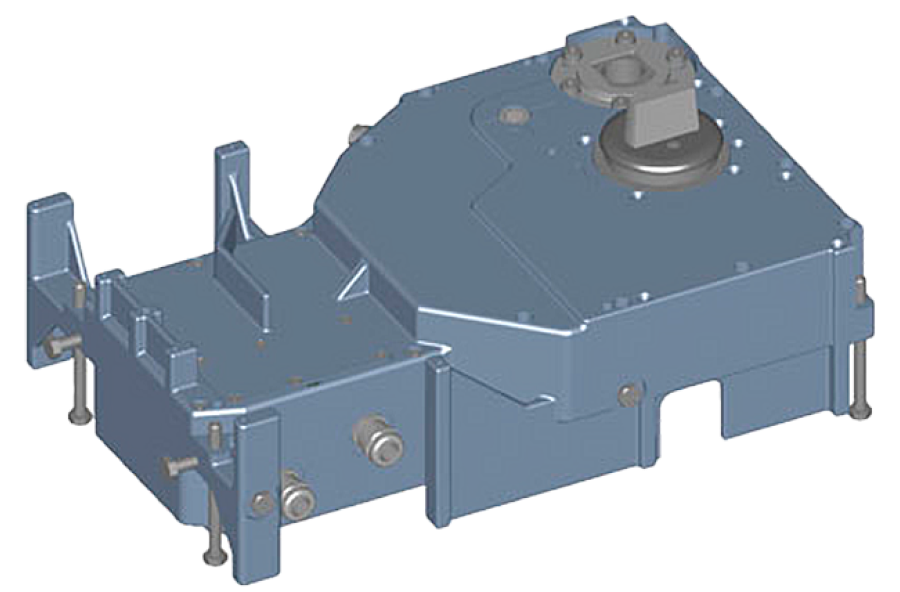

Распашные двери
СДЕЛАЙТЕ ВАШУ ПОВСЕДНЕВНУЮ ЖИЗНЬ ПРОЩЕ. Потому что наша повседневная жизнь требует большей доступности и гигиены. Открываясь с помощью кнопки, сенсорного радара или даже волшебного переключателя, станьте водителем своей распашной двери. Настолько простой в автоматизации и адаптированный к вашим потребностям, что теперь он станет неотъемлемой частью вашей повседневной жизни. Модернизированные или новые, автоматизация в мгновение ока! Компания TORMAX разработала мощный привод, встроенный в пол, специально для архитектуры, требующей высоких требований к эстетике и функциональности. Он автоматизирует одностворчатые или двустворчатые двери.
«Он открывает все незаметно»
Старая или новая распашная дверь из латуни, дерева, металла, перегородка, огромная, тяжелая: iMotion® 1401 откроет все. И все это при полной незаметности. Модель 1401 — это уникальный встраиваемый распашной двигатель (в пол или в потолок, даже в погреб через пол), который позволит вам приводить в действие все, сохраняя при этом внешний вид вашего фасада без изменений. Он уже покорил самые красивые места Гостинца Метрополь, башня TOWER, ЖК Бродский и многие другие архитектурные достопримечательности. ТЕХНОЛОГИЯ IMOTION® Двигатели iMotion® представляют собой синхронные двигатели переменного тока, то есть бесщеточные. Они не изнашиваются и обладают выдающимися характеристиками, которые позволяют приводить в движение двери больших размеров и с большим весом в течение многих лет. Стеклопакеты, большая высота, для iMotion® нет ничего сложного. Кроме того, эти двигатели экологичны, имеют спящий режим и 96% его компонентов подлежат вторичной переработке. iMotion® также означает экономичность, поскольку не требует технического обслуживания и не требует поломок. Низкая стоимость жизненного цикла.
ПРЕИМУЩЕСТВА
-
Неограниченный выбор форм дверей и материалов
-
Стабильное поведение при воздействии ветра
-
Неограниченное ручное управление в режиме отключения питания
-
Поколение iMotion: интеллектуальное микропроцессорное управление обеспечивает постоянный мониторинг движения дверных полотен
-
Синхронный двигатель переменного тока без износа на постоянных магнитах: мощность и длительный срок службы
-
Привод двери также служит нижней опорой двери